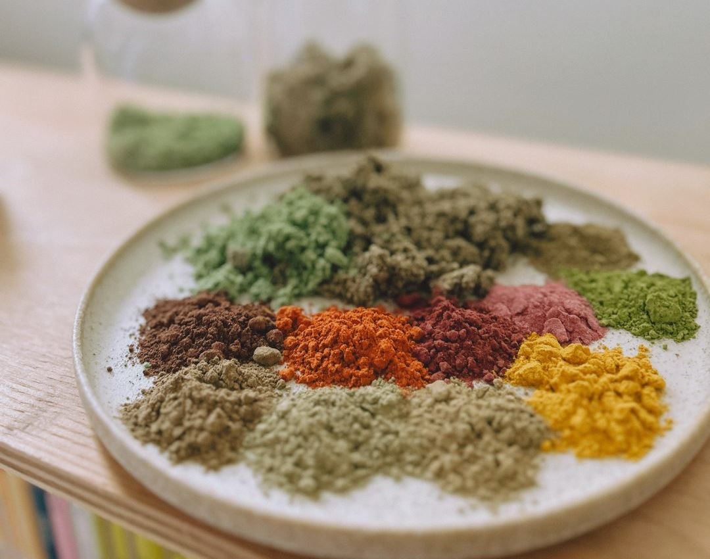
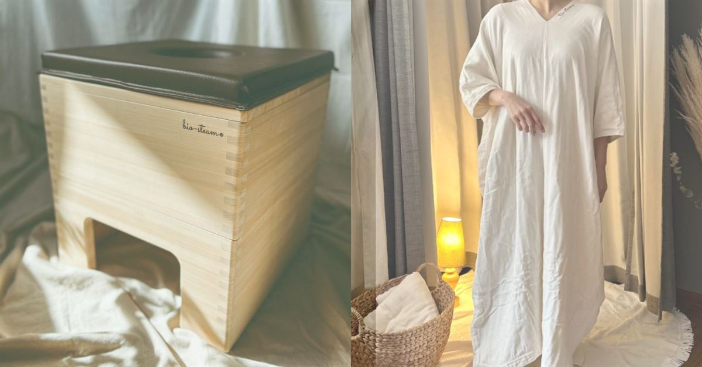

ビオスチーム
（発酵野草蒸し）
よもぎ蒸しを、
発酵の力で進化させた。
12種類の野草と発酵エキス。
座っているだけで、芯からじんわりあたたまる。

よもぎ・クマザサ・モリンガ・スギナなど12種類の野草すべてに、玄米麹・玄米酵母の発酵エキスを配合。発酵の力で、野草の恵みを肌の奥までじっくり届けます。
さらに当サロンでは、野草の蒸気に天尊の塩（御塩）のミネラルも加える独自の配合を行っています。

content 01 料金
- はじめてのビオスチーム（初回限定・カウンセリング＋30分程度）4,000円
- いつものビオスチーム（2回目以降・40〜50分）6,000円
- マツビオセット（マツヤニパック×ビオスチームの当サロンオリジナル）11,500円
※シリカ水・オーガニックマント貸出込み
妊娠初期の方・発熱中の方等は施術をお受けいただけません。ご不安な点はカウンセリング時にご相談ください。おすすめは2週間に1回のペースです。